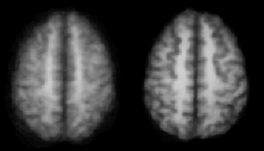

The linear normalization obtained by applying '
vnormalize' and '
vfunctrans/vdotrans'
can be further improved by a subsequent processing step that performs
an additional non-linear normalization known as 'demon matching'. In this type of non-linear normalization,
an anatomical 3D data set, i.e. the model, is deformed such that it matches
another 3D anatomical data set, i.e. the source, that serves as a fixed reference image.
For example, the data set 'mr120_t1_pl.v' as model image may be deformed to match the
data set 'mr131_t1_pl.v' as source image. Both images 'mr120_t1_pl.v' and
'mr131_t1_pl.v' should be linearly normalized
before
non-linear normalization.
The use of the terms 'model' and 'source' is now in compliance with the paper
by Thirion as cited below. (Note: This notation differs from
the notation used in the previous implementation of demon matching in
'vmatch' and 'vresample'. However, these programs are no longer
available, but have been replaced by 'vdemon' and 'vdeform'.)
The output of 'vdemon' is a deformation field that describes
how each pixel in 'mr120_t1_pl.v' should move in order to
match a corresponding pixel in 'mr131_t1_pl.v'.Using 'vdeform',
the deformation field can then be applied to the
3D anatomical data set, to a 3D zmap, or to 3D functional data.
Because functional data have a lower spatial resolution than
anatomical data or zmaps, the deformation field is automatically
downsampled by 'vdeform' when necessary. This way, each type of
data keeps its
original resolution when being deformed.
The images below illustrate the effects of non-linear
normalization. The left image shows an average of 10 data sets
after linear normalization. The right image shows the same
10 data sets averaged after additional non-linear normalization.

The deformation field is obtained by applying the program
'vdemon'. Here is a typical example where 'mr120_t1_pl.v' is deformed and 'mr131_t1_pl.v'
is the fixed reference image:
vdemon -model mr120_t1_pl.v -source mr131_t1_pl.v -field field_120_131.v
The computation of the deformation field takes approximately 3 minutes on a 1.7 GHz PC.
The deformation field can now be applied to the
3D anatomical data set, to a 3D zmap, or to 3D functional data, all of
which have to be linearly normalized already.
The deformation field is applied to all objects found in the input file.
A typical call looks like this:
vdeform -in mr120_t1_pl.v -out deformed120.v -field field_120_131.v
This step takes only a few seconds of computation time. Be aware that the deformation of any type
of data requires about 2.5 times the amount of free main memory (not swap space!) compared to the
size of the data. Especially for functional data sets, the memory requirements can easily reach
several hundred megabytes.
J.-P. Thirion, "Image matching as a diffusion process:
an analogy with Maxwell's demons",
Medical Image Analysis, 2(3):243-260, 1998.